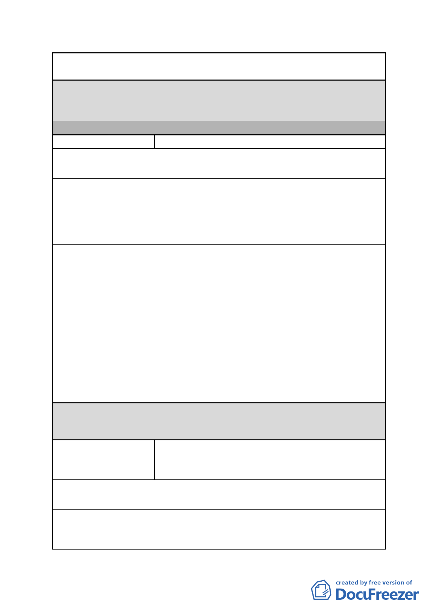

案 名 擬定臺北市南港區鐵路地下化沿線土地細部計畫案
都委會
決議
分區
編號
陳情地點
1.本陳情地點屬修正後細部計畫範圍，本地區主要計畫業指定
為「策略性再開發地區」。
2.同意以市府回應說明辦理。
D區
7 陳情人 陳建業
南港路二段 23 巷 9 號（南港區南港段四小段 423 地號）
為安身立命，小市民住的權利，遮風避雨之地。
陳情理由
考量小地主、土地面積太小，請予以特案考量處理，依都市
建議辦法 計畫免予變更後之回饋，原地原房不拆遷。
市府回應
說明
都委會
決議
1.本案陳情地點位於編號 DR-1 瓶蓋工廠以西之工業區土地，
查內政部審定之主要計畫，考量該地區權屬複雜且為保障私
有地主分配權益，原則同意朝向商業區規劃，但應另案研擬
都市更新事業計畫及變更都市計畫書圖草案。另為促進本地
區開發，主要計畫業劃定為更新地區，後續得申請適用相關
都市更新容積獎勵。
2.至有關建議考量小地主權益免予變更回饋部分，依「工業區
檢討變更審議規範」及本市商業區通盤檢討計畫案之相關規
定，後續該等土地依上開內政部決議向本府提出變更申請
時，仍須辦理回饋。惟於公平性原則前提下，將針對相關容
積獎勵規範給予適宜之調整，以兼顧小地主權益及協助開發
改建。
1.本陳情地點非屬修正後細部計畫範圍。
2.同意以市府回應說明辦理。
編號
陳情地點
南港路 2 段 19 號、21 號 23 巷全體住戶
8 陳情人 （周泰維、劉惠枝、劉玉粦、張淑貞、邱
時敏、張燕玉、張淑婷）
南港路 2 段 19 號、21 號及 23 巷
南港路 2 段 19 號、21 號 23 巷全體住戶，爲南港區南港段 4
陳情理由 小段 418 地號等土地（D 區）爭取土地免予回饋暨基準容積的
增加、建蔽率提升，以免本區小面積住戶與小地主被財團吞
- 22 -